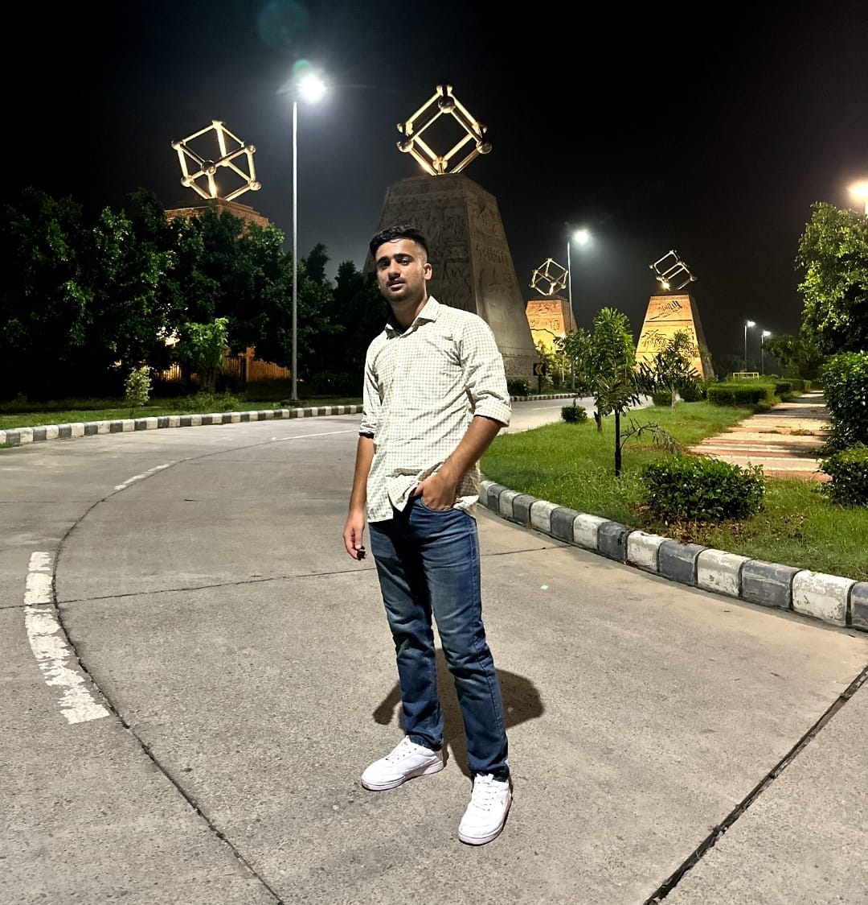

Sujal Thakur
DOB- 11/06/2002

Summary
My goal is to become associated with a company where I can utilize my skills and gain further experience while enhancing the company's productivity and reputation.
Education
- B.Tech in Mechanical Engineering- IIT Ropar (2020-2024)
- Senior Secondary Education- K.V.O.N.G.C. (2019-2020)
Work Experience
- National Chung Cheng University, Taiwan- Research Intern
May 2023- July 2023
- Worked on the research topic: Drone and AI-based Real-Time Pollution Monitoring of Water and Air Pollution which involved analysis of various sites of Sutlej river in India for water pollution and of several cities in India and Nepal for air pollution.
- Pehchan Ek Safar- Teacher
Oct 2020- Dec 2023
- Provided mentoring and tutions to students of classes 9th to 12th for Physics, Chemistry and Maths.
Skills
- Machine learning: ****
- C++, Python: ***
- Matlab: ***
Achievements
- Selected in TEEP Asia Program - (April 2023)
- Winner of GD (Finance and Commerce) held on Topic - ”Annual Budget”: 2020.
Other